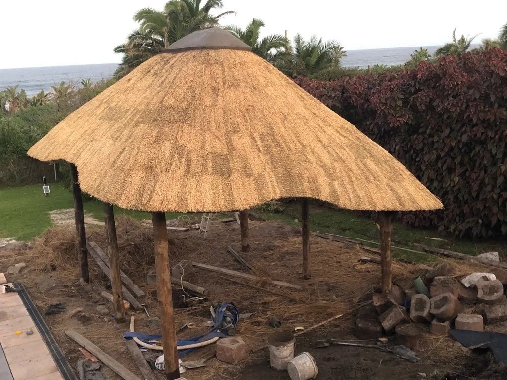
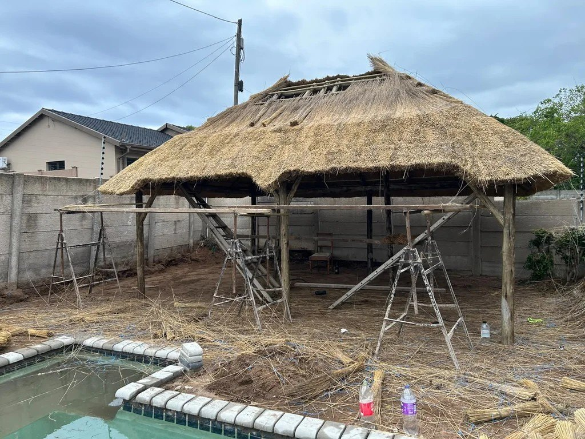
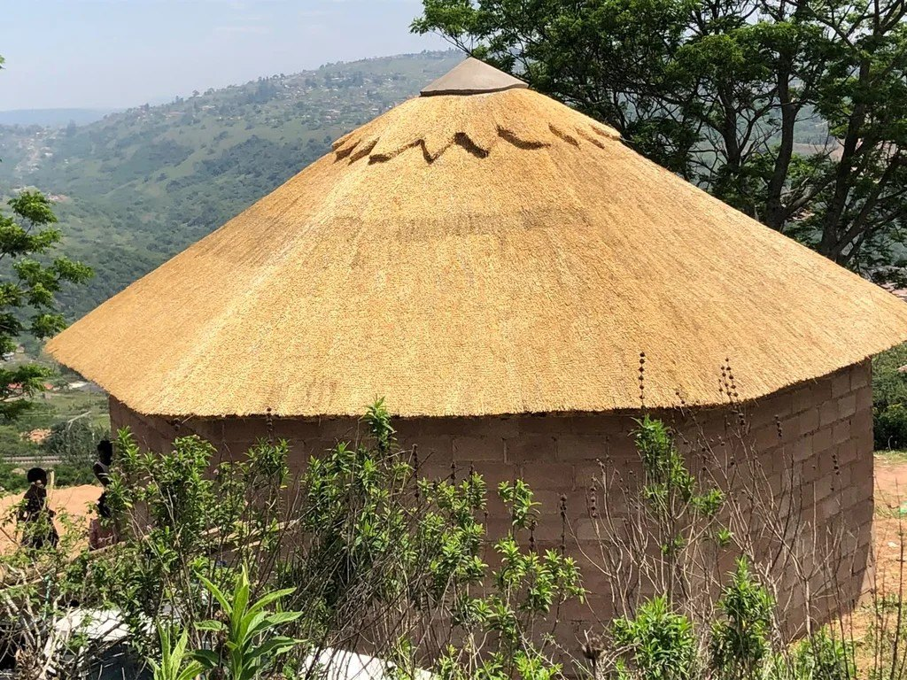
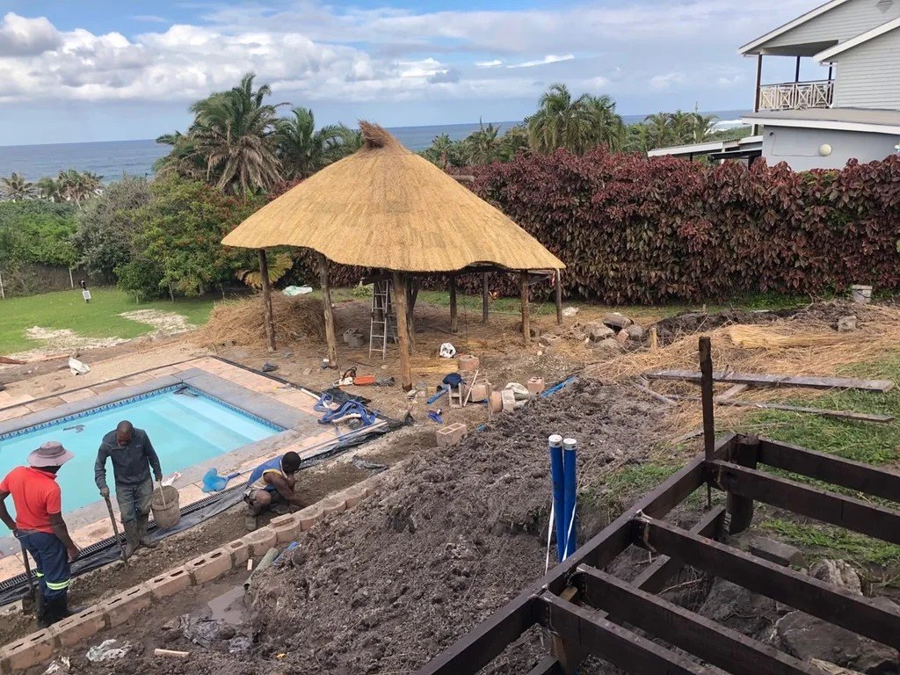
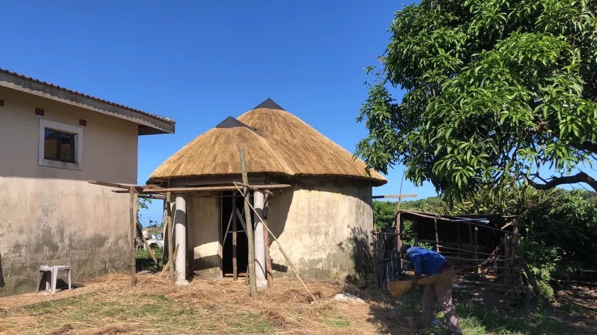
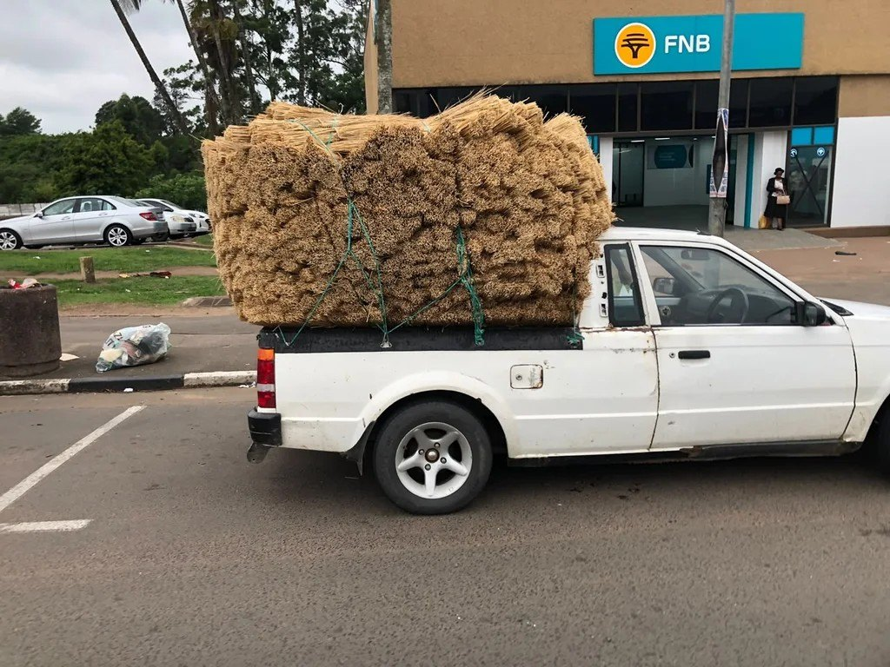
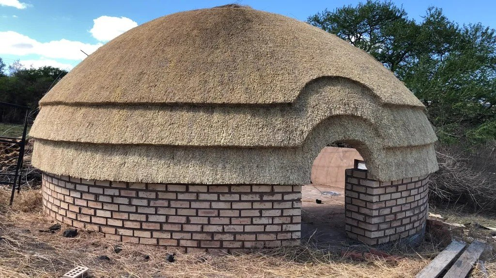
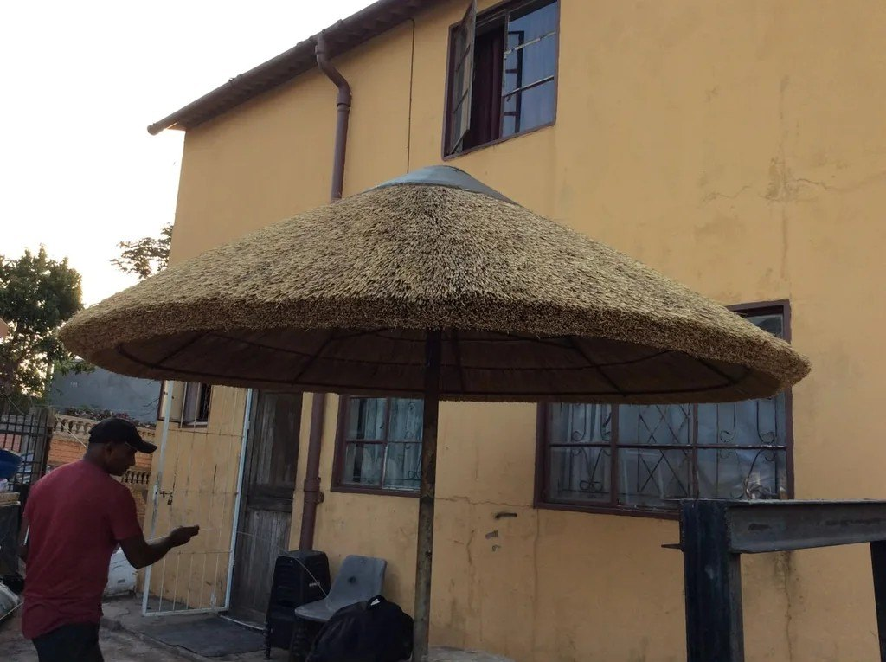

New lapas and gazebos built from scratch, old thatch repaired and re-thatched, and the wooden deck to go with it. We come to you for a free quote.
Everything for your outdoor area, done by one team.

New thatch lapas, gazebos and entertainment areas built from scratch: poles, frame, thatch and finish.
See details →
Leaking, thin or old thatch repaired, or the whole roof re-thatched so it looks new again.
See details →
New thatch roofs for houses, rondavels, cottages and outbuildings, plus traditional thatched huts.
See details →
Wooden pole structures, decks and framing, on their own or with a lapa or gazebo.
See details →WhatsApp us a photo. We'll tell you what it needs and send a free quote.
New thatch, re-thatching and the finished result.


Mashaba Thatching builds new thatch lapas, gazebos and roofs, repairs and re-thatches old ones, and builds the wooden decks and pole structures that go with them. Joaquim and the team bring the grass and do the work themselves, so you deal with the people on your roof.
Lapas, rondavels, huts, gazebos and decks.


Once your Google Business Profile is live, your customer reviews show up in this section, along with a "Leave us a review" button. (This box is only here in the preview.)
Based in Outer West Durban, working across Durban and KZN for homes, lodges and estates. [Joaquim to confirm the areas he works in most, so each can get its own page once there are jobs to show.]
Check if we cover youIt depends on the size and design. [Joaquim to confirm starting prices.] Quotes are free: WhatsApp us a photo of the space.
Yes. We repair leaks and thin patches, redo the top, and re-thatch old lapas and roofs so they look new again.
We're based in Outer West Durban and work across Durban and KZN. [Joaquim to confirm the areas he covers.]
Yes. We build and repair thatch for homes, lodges and estates.
Yes. Wooden pole structures, framing and decks, on their own or with a lapa.
Call or WhatsApp 079 100 6702 for a free quote.